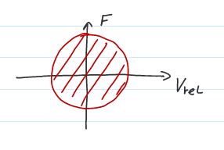

Typy aktivních a poloaktivních aktuátorů
Aktivní aktuátory
Zdroje řízených akčních sil
- pieozelektrické materiály - velký poměr síla/hmotnost, ale nízký zdvih
- hydraulické aktuátory - nízká šířka pásma řízení síly
- elektromagnetické (voice coil acutator) - možnost skoro nulové tuhosti

Poloaktivní
Zdroje řízených tlumících sil (řízená disipace energie)
- tlumič s magnetoreologickou kapalinou
- tlumič se škrtícím ventilem